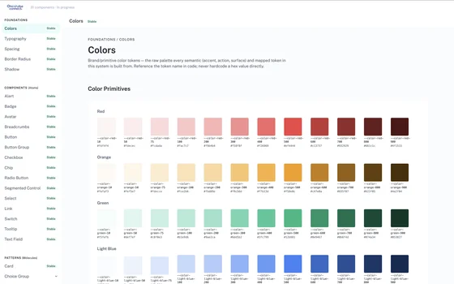
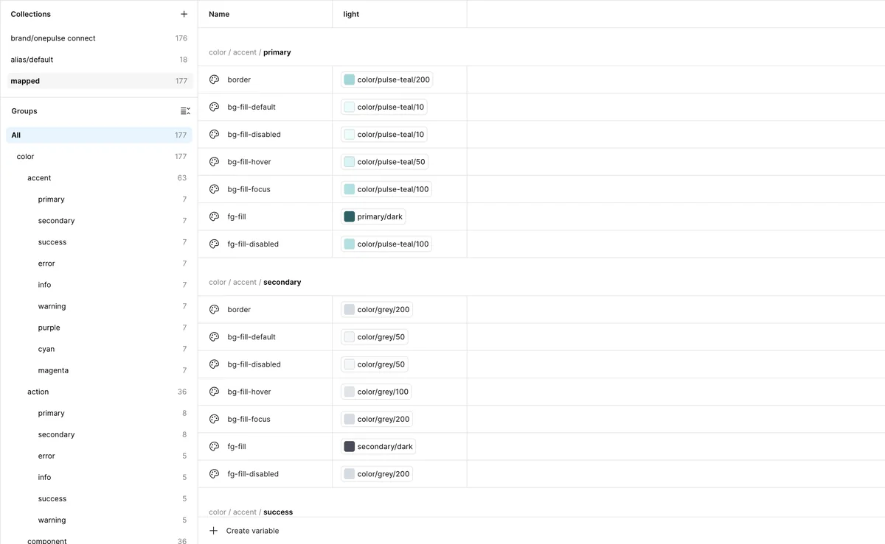
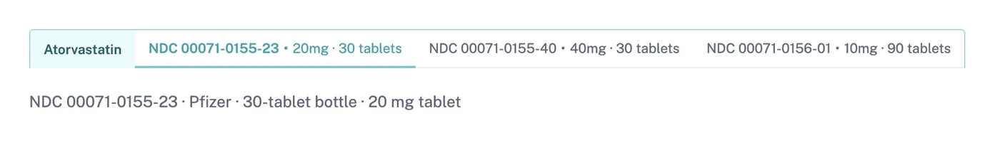
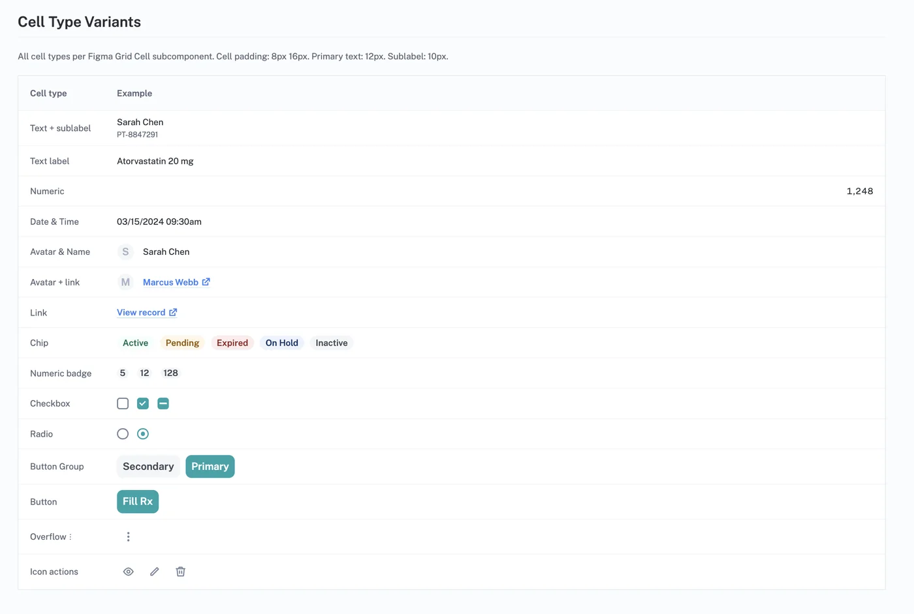
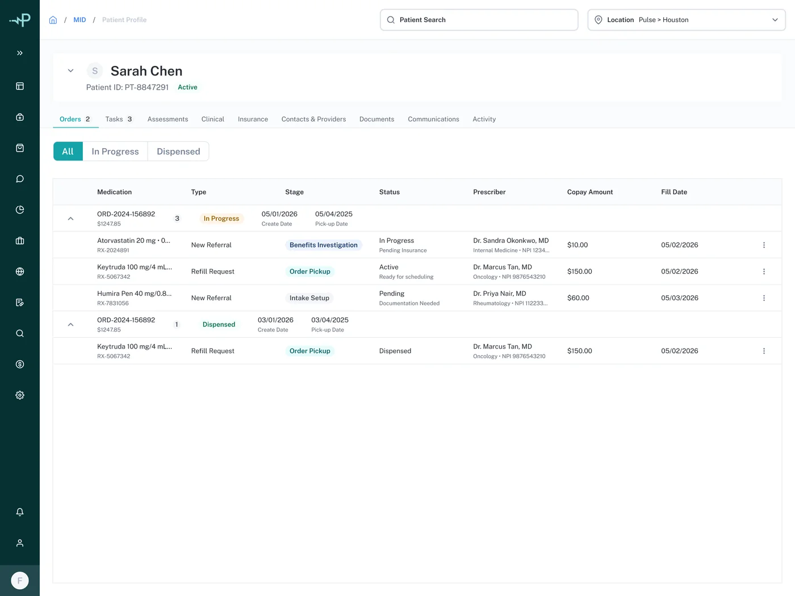
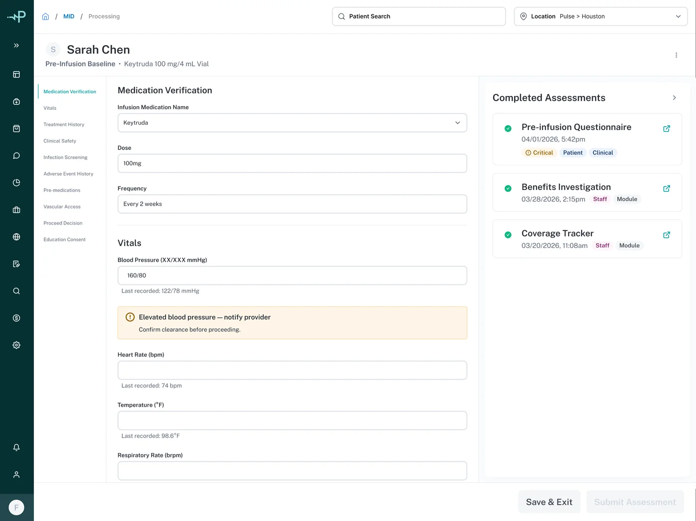

Case study
OnePulse Connect Design System
I built the design token and component system that OnePulse Connect's three designers, me included, used as their standard. When I audited it against the live app, I found three different reds already shipped to production. One was hardcoded into a button that no token file accounted for.
At a glance
Every screen
3 + Eng
1
25 / 16 / 3
When I joined Elevate Health Technologies to work on OnePulse Connect, its specialty pharmacy platform, the product had a component library, but it was split across several Figma files with no consistent naming and no shared token source. If a designer or engineer wanted to know how a chip, card, or table should look or behave, there was nowhere to check.
Scattered across Figma files, no shared naming

One shared token & component system
I wanted one token and component system that other designers could work from directly in Figma, with clear rules for states, variants, and usage.
The screens carry prescriber NPIs, drug NDCs, claim statuses, copay amounts, and prior authorization steps. Without a shared library, the same status could look different depending on which screen a pharmacist or technician had open. On a controlled substance or oncology order, misreading a status can put the wrong drug in front of the wrong patient.
That risk repeats across more than 2,000 provider locations in 29 states, with nearly $1 billion in drug and supplies inventory running through the platform. Patching screens one at a time would have left the same risk sitting everywhere else, so the fix had to be a shared system.
There were no tokens when I started. Every screen hardcoded its own colors, spacing, and type, decided fresh each time.
I built three layers. Primitives hold raw values with no meaning attached. Semantic aliases give a primitive a role, so "pulse-teal-500" becomes "primary." Mapped tokens resolve those aliases into what components actually consume, like bg-fill-default or fg-fill.
Components only reference the mapped layer. Change a primitive or an alias and everything downstream updates without anyone opening a component file. It also gave every prototype one rule to follow: never hardcode a hex value.
Each section of the token file covers a decision a designer or engineer would otherwise make alone: primitives, aliases, applied tokens (accent, action, component, text, surface), then typography, spacing, radius, border width, and elevation.

I fully documented 25 atoms and 16 patterns. The 3 global components are in the coded library too, though less complete. Inline Drawer is furthest behind, and I get into why below.
Tab Group came straight out of an Orders problem. A single drug can have several NDCs, and regulatory and administrative rules say those have to stay together under one drug, even though different drugs each get their own tab. I built Tab Group to keep them grouped under one drug, and we caught it during design, before it ever shipped.

Each component's documentation lives on the component in Figma, next to the token file. It covers purpose, when to use it and when to skip it, every property, layout behavior, common usage patterns, dos and don'ts, and accessibility. The other two designers used the system without me in the room. Engineers built from the same library, and so did the coded prototypes I made later.
Data Table carried the most weight, because orders, claims, dispensing, and inventory all live in dense tables. I built two types, Single Row and Tree Row, around AG Grid's capabilities from day one, since that's what engineering builds with.
Most of the effort went into rules the table enforces. There are 15 grid cell content types (checkbox, chip, numeric, avatar and name, link, button group, and more), so every column gets typed correctly and no table makes up its own formatting. Disabled rows cascade to every child component, so a disabled row can't leave a clickable link or button behind by accident. Tree rows go one level deep. Pagination treats a parent and its children as one unit that never splits across pages. I also styled checkboxes and radios off native input state, which kept focus and keyboard behavior intact.

By the end, every screen across every module of OnePulse Connect was designed from the system's components and patterns. All three designers, me included, built from it in Figma by default. Engineers built from the same Figma library and from the tokens in Figma and Tokens Studio, and that work was still in progress when I left.
The coded library was further behind. When I wrote this, designers were just starting to use it for rapid prototyping. Some real use, but nowhere near the default the Figma system had become.


While auditing the production codebase, I found three reds in three places: the token file, the component library, and a value hardcoded into a live button. None of them matched.
I traced each one back. The component library's red matched Figma. The token file's red didn't match anything I could find, so living in the token file wasn't enough reason to trust it. I confirmed the value against Figma and corrected the token file at the source.
While fixing it, I found part of the codebase pointing at raw primitives and skipping the semantic layer entirely, which meant future token changes would never reach those screens. I opened a pull request to point those references at the proper layer. An engineer reviewed and approved it, and it shipped to production.
Required fields say "(Required)" instead of showing an asterisk, because a word works even when the reader doesn't know the convention. Disabled buttons get their own token set, since in a clinical tool a disabled action that looks available can get clicked.
Designers had a polished Figma library, but every prototype meant redrawing screens by hand, and every engineering handoff meant translating specs into code all over again. I used Claude Code to bring the system into HTML and CSS. The goal was working components designers and PMs could pull for fast prototyping, plus a faithful reference for an eventual React and Storybook build.
Claude Code sometimes pulled older token values instead of what was current in tokens.css. I checked its output against tokens.css directly and fixed the references that were off. I handled AI-generated copy the same way, logging real gaps and cutting anything plausible but ungrounded in the system.
I finished Figma first, and the code got most of the way there. All 25 atoms and 16 patterns exist as working HTML/CSS pages with their own docs, in a structured repo with a live, browsable site. The 3 globals are in the repo too, but Inline Drawer blew past the time I'd scoped for it and is only partly built.
I marked a token assignment [NEEDS VERIFICATION] whenever I couldn't confirm it in Figma dev mode, which happened over a hundred times across the docs. Missing shadow tokens, expiring asset URLs, and undocumented layout details each went into a gap log along with the call I made to fill them. Data Table alone has dozens of entries.
React and Storybook never happened. That was supposed to be the next step, built on a mostly complete vanilla library.
Some of what's left is scoped and known: finish the remaining global components, Inline Drawer included, and close out the NEEDS VERIFICATION flags and gap-log items. The bigger step is converting the vanilla library to React and getting it into Storybook, so engineering works from the same source of truth designers already have in Figma.
I don't have the resources to finish Inline Drawer for this case study. Partway through, its cost passed what I'd scoped, and I stopped there.
This project sharpened what I already knew about token architecture. Getting it into code is where I learned the most, mostly from chasing down problems like the three reds.